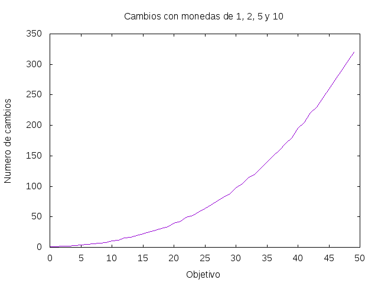

Problema del cambio de monedas
El problema del cambio de monedas consiste en dada una lista ms de tipos de monedas (con infinitas monedas de cada tipo) y una cantidad objetivo x, calcular el número de formas de obtener y usando los tipos de monedas de ms. Por ejemplo, con monedas de 1, 5 y 10 céntimos se puede obtener 12 céntimos de 4 formas
1,1,1,1,1,1,1,1,1,1,1,1 1,1,1,1,1,1,1,5 1,1,5,5 1,1,10
Definir las funciones
numeroCambios :: [Int] -> Int -> Int sucCambios :: [Int] grafica_cambios :: Int -> IO ()
tales que
-
(numeroCambios ms x)es el número de formas de obtener x usando los tipos de monedas de ms. Por ejemplo,
numeroCambios [1,5,10] 12 == 4 numeroCambios [4,1,3] 6 == 4 numeroCambios [1,5,10] 50 == 36
-
sucCambioses la sucesión cuyo k-ésimo término es el número de cambios de k usando monedas de 1, 2, 5 y 10 céntimos. Por ejemplo,
λ> take 20 sucCambios [1,1,2,2,3,4,5,6,7,8,11,12,15,16,19,22,25,28,31,34]
-
(grafica_cambios n)dibuja la gráfica de los n primeros términos de la sucesión sucCambios. Por ejemplo,(grafica_cambios 50)dibuja

Soluciones
import Data.List (sort) import Graphics.Gnuplot.Simple numeroCambios :: [Int] -> Int -> Int numeroCambios ms = aux (sort ms) where aux _ 0 = 1 aux [] _ = 0 aux (m:ms) x | x < m = 0 | otherwise = aux (m:ms) (x - m) + aux ms x cambios :: [Int] -> Int -> [[Int]] cambios xs y = aux (sort xs) y where aux _ 0 = [[]] aux [] _ = [] aux (k:ks) m | m < k = [] | otherwise = [k:zs | zs <- aux (k:ks) (m - k)] ++ aux ks m sucCambios :: [Int] sucCambios = [numeroCambios [1,2,5,10] k | k <- [0..]] grafica_cambios :: Int -> IO () grafica_cambios n = plotList [ Title "Cambios con monedas de 1, 2, 5 y 10" , Key Nothing , XLabel "Objetivo" , YLabel "Numero de cambios" , PNG "Problema_del_cambio_de_monedas.png" ] (take n sucCambios)